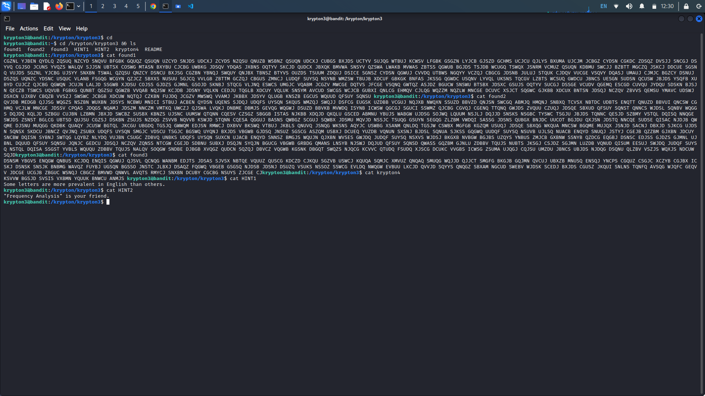
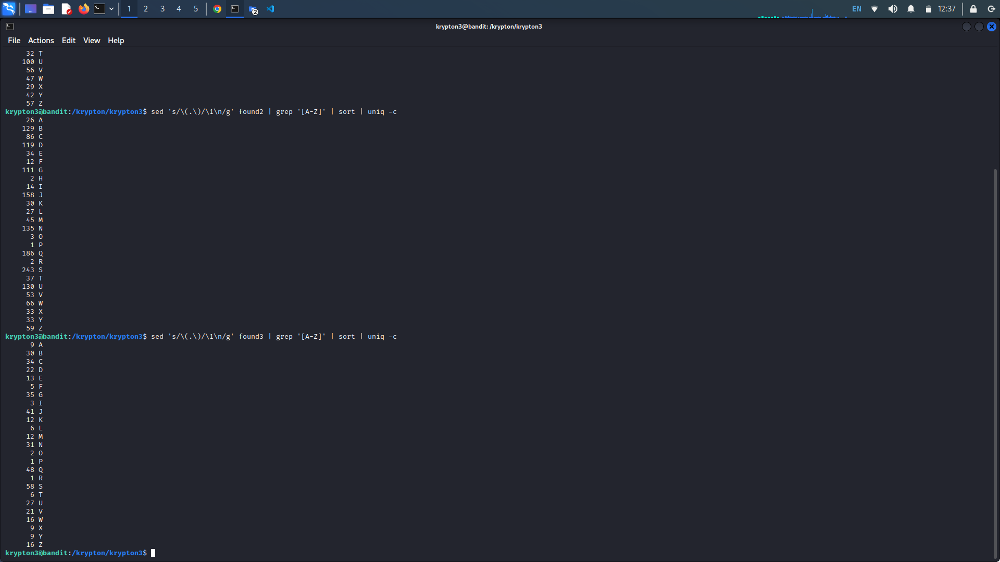
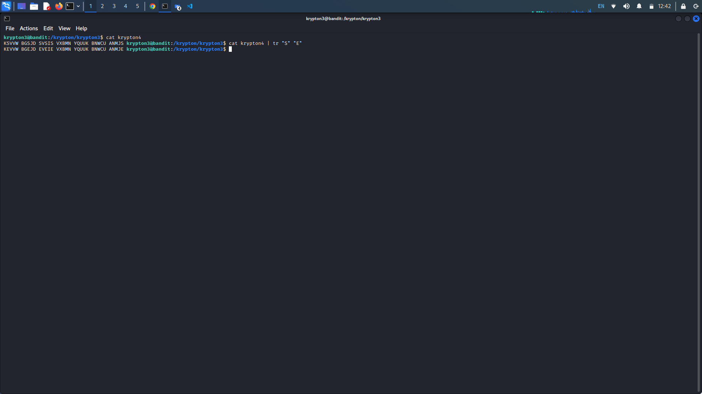
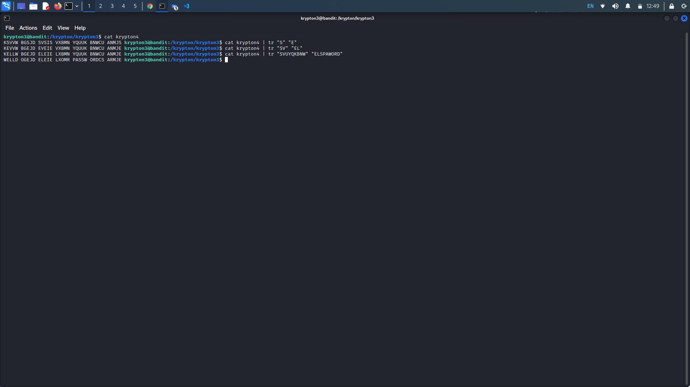
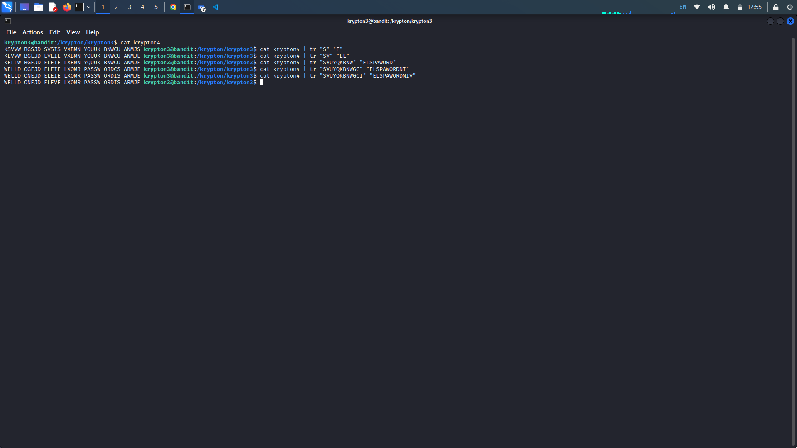
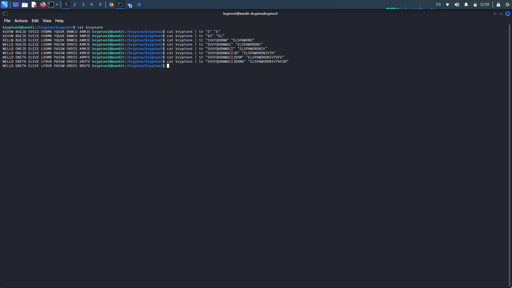

Krypton Level 4 → 7:
Krypton Level 3 → 4:
Level Goal:
Well done. You’ve moved past an easy substitution cipher. The main weakness of a simple substitution cipher is
repeated use of a simple key. In the previous exercise you were able to introduce arbitrary plaintext to expose
the key. In this example, the cipher mechanism is not available to you, the attacker. However, you have been
lucky. You have intercepted more than one message. The password to the next level is found in the file
‘krypton4’. You have also found 3 other files. (found1, found2, found3)
You know the following important details:
The message plaintexts are in American English (*** very important) - They were produced from the same key (***
even better!) Enjoy.
Writeup: Navigate to the Krypton3 directory, looking at the provided files, it looks like we are
going to need to perform a frequency analysis in order to determine the letter substitutions. Unlike last time,
our key will not be the same for every letter of the alphabet.

Our first step will be to determine the letter frequency of the provided files. This way we may be able to map some of the most frequency characters found with the most frequency characters used in the English language.
Using the command "sed 's/(.)/\1\n/g' found1 | grep '[A-Z]' | sort | uniq -c", we can determine the frequency of each letter in the file.
- sed 's/(.)/\1\n/g' found1: This command uses the sed tool with a substitution expression (s/) to replace every occurrence of a character with itself (\1) followed by a newline character (\n). The g flag ensures that all occurrences are replaced, not just the first one. The input for this command is taken from the file found1.
- grep '[A-Z]': This command uses the grep tool to filter the output of the previous sed command. It searches for lines that contain uppercase letters between A and Z.
- sort: This command sorts the lines of the input in ascending order.
- uniq -c: This command uses the uniq tool with the -c flag to count the number of consecutive occurrences of each unique line. It displays the count before each line.

In all cases, we can see that "S" is our most frequent character. According to Wikipedia, the most frequent letter in both texts and in dictionaries is the letter "E". Using tr we can replace the letter s with the letter e.

Additionally, looking at double letters in our string, we can see "VV" and "UU", the most common pair of double letters is "LL". We can first replace "V" with "L". We also know that the string "password" will most likely be in the string, the double "U" may correspond with the double "S" in the word password. Knowing this we can then map the rest of the corresponding letters to the letters in password.

Now our string is looking a little more sensible. It looks after the word "well" comes "done" so lets replace "G" with "N". Additionally it looks like after "password" should come "is" so we can also replace "C" with "I". We can also guess that "level" will be in this string, we have "LEIE L" so lets also replace "I" with "V".

So far we have the string "WELL DONE JDE LEVEL XOMR PASSWORD IS ARMJE". It looks like "JDE" corresponds to "THE". Additionally it looks like "XOMR" will correspond to "FOUR" for level 4. Now we have "WELL DONE THE LEVEL FOUR PASSWORD IS ARUTE". Lastly, we can infer that "A" should be "B" to create the word "brute".

Krypton Level 4 → 5:
Level Goal:
Krypton Level 6 → 7:
Level Goal: